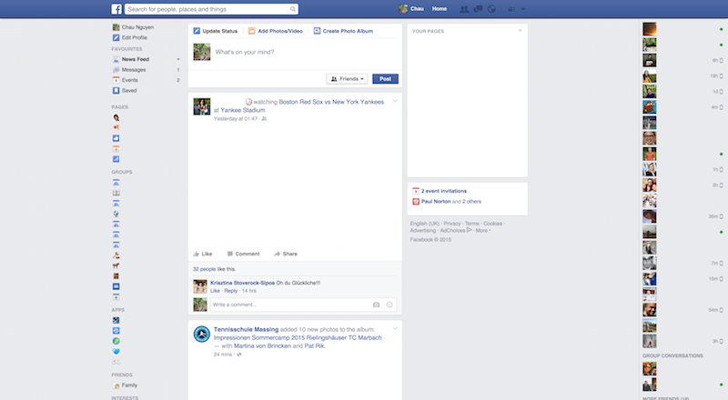
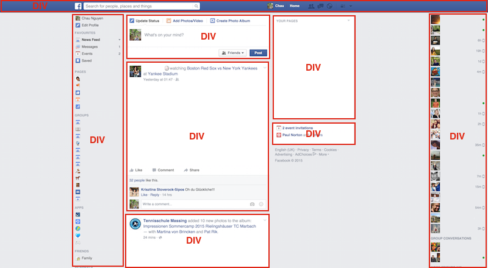

HTML
Was ist HTML?
HTML ist Sprache um Webseiten zu bauen. Mit HTML kann man beschreiben, wie eine Webseite aussehen soll. Im engeren Sinne ist es deswegen eigentlich keine Programmiersprache, sondern lediglich eine beschreibene Sprache.
HTML Dateien enden mit dem Dateiformat .html und können ganz einfach vom Browser geöffnet werden.
Erstelle eine leere Textdatei namens index.html und öffne sie im Browser.
Grundgerüst HTML
Das Grundgerüst von HTML sieht immer so aus:
<html>
<head>
</head>
<body>
</body>
</html>Die spitzen Klammern beschreiben immer einen Bereich. <html> beginnt einen html Bereich oder Abschnitt. </html> beendet ihn.
Die Einrückungen sind eigentlich unwichtig.
Diese Schreibweise ist genauso korrekt:
<html><head></head><body></body></html>Diese sagt auch das gleiche:
<html>
<head>
</head>
<body>
</body>
</html>Allerdings ist es ein guter Stil, den Code richtig einzurücken. Also gewöhnt es euch am besten sofort an :) Außerdem ist es besser lesbar.
Der Head-Bereich
Im Head - also dem Kopfteil - sind Informationen, die nicht auf der Webseite selbst dargestellt werden. Stattdessen sind hier andere Informationen drin, die nur indirekt mit der eigentlichen Webseite zu tun haben. Man nennt solche Informationen auch Meta-Informationen.
Ein Beispiel wäre zum Beispiel der Titel einer Webseite.
<html>
<head>
<title>Meine Webseite</title>
</head>
<body>
</body>
</html>Eine andere Information, die wir unserer Webseite noch mitgeben ist, dass wir Texte schreiben, in denen zum Beispiel Umlaute wie ü oder ß vorkommen. Diese Symbole sind im sogenannten UTF-8 enthalten.
Wir fügen also folgende Information in den Head Bereich ein, um Umlaute schreiben zu können:
<meta charset="utf-8">Probier es aus und finde raus, wo der Titel auftaucht.
Der Body-Bereich
Im Body ist der eigentliche Inhalt der Webseite. Wenn ich zum Beispiel einen Text auf meiner Webseite haben möchte, Schreibe ich ganz einfach den Text in den Body.
<html>
<head>
<title>Meine Webseite</title>
<meta charset="utf-8">
</head>
<body>
Willkommen auf meiner Webseite!
Hier werde ich alles ausprobieren,
was ich auf dem ScienceCamp Informatik
gelernt habe und eine coole Webseite bauen.
Diese Seite wird in einer Woche
wirklich toll aussehen!
</body>
</html>Schreibe deine erste HTML-Seite mit Inhalt.
Wie du siehst, ist die Formatierung des Textes auf der Webseite leider nicht so, wie wir es uns wünschen. Dafür müssen wir noch einige Textformatierungen lernen:
<br/>ist eine Abkürzung für break, also ein Zeilenumbruch<h1>Überschriften</h1>kann man mit h1-Tags schreiben.hist die Abkürzung für Headline, also einer Überschrift. statth1kann man auchh2oderh3usw. benutzen. Die Überschriften werden mit steigender Zahl kleiner.<p>Paragraphen</p>kann man mit p-Tags beschreiben. Die sind nicht unbedingt nötig, sind aber zu empfehlen.
Versuche nochmal deine erste Seite zu schreiben indem du die neu gelernten Tags anwendest.
<html>
<head>
<title>Meine Webseite</title>
<meta charset="utf-8">
</head>
<body>
<h1>
Willkommen auf meiner Webseite!
</h1>
<p>
Hier werde ich alles ausprobieren,
was ich auf dem ScienceCamp Informatik
gelernt habe und eine coole Webseite bauen.
</p>
<p>
Diese Seite wird in einer Woche
wirklich toll aussehen!
</p>
</body>
</html>Es gibt auch weitere Tags für Text wie zum Beispiel <strong> text </strong> oder <em> text </em>.
Probier strong und em aus.
Mehr als nur Text
Webseiten bestehen üblicherweise aus mehr als nur Text. Moderne Webseiten haben Bilder, Links oder Listen.
Bilder
Bilder kann man wie folgt einfügen:
<img src="PFAD_ZUM_BILD"/>Der Pfad zum Link ist eine Angabe, wo sich das Bild befindet.
Beispiel: Wenn diese HTML Datei und das Bild im gleichen Ordner sind, also so:
irgendein Ordner
├── index.html
└── bild.jpgdann wäre das Bild so aufzurufen: <img src="bild.jpg"/>
Wenn diese HTML Datei in einem Ordner ist, in dem sich ein weiterer Ordner bilder befindet, in dem bilder drin sind, also so:
irgendein Ordner
├── index.html
└── Ordner
└── bild.jpgdann wäre das Bild so aufzurufen: <img src="bilder/bild.jpg"/>
Du kannst alle möglichen Bildformate benutzen. Es funktioniert zum Beispiel auch mit .gif oder .png-Dateien.

Du kannst auch auf Bilder von anderen Webseiten zugreifen.
Auf http://i.giphy.com/achoDiZFxZvdm.gif ist zum Beispiel ein Bild. Um dieses anzuzeigen, kannst du den Link einfügen, also:
<img src="http://i.giphy.com/achoDiZFxZvdm.gif"/>

Falls du deine Webseite mal online stellst, solltest du das allesdings aus verschiedenen Gründen (z.B. Copyright) vermeiden. Für den kleinen persönlichen Gebrauch ist es aber erstmal ok.
Füge ein Foto von dir und Bilder in deine Webseite ein.
Links
Webseiten brauchen natürlich auch Links zu anderen Webseiten:
<a href="PFAD_ZUM_LINK"> Text </a>Auch hier gilt wie bei Bildern: Du kannst du externen Links verlinken oder auch eine eigene HTML-Seite mit dem Pfad angeben:
<a href="https://de.wikipedia.org/wiki/Hyperlink"> Wikieintrag zu Hyperlinks </a>
Der Inhalt innerhalb des a-Tags ist der Teil, der dann anklickbar ist und zum Link führt. Du kannst auch Bilder als Link benutzen:
<a href="https://de.wikipedia.org/wiki/Haushund">
<img src="bilder/link.gif"/>
</a>

Wie du merkst, öffnet sich der Link direkt im aktuellen Tab oder Fenster. Manchmal (vor allem bei Links zu externen Seiten), möchte man den Link lieber in einem neuen Tag öffnen.
Setze dafür ein target, also ein Ziel:
<a href="https://de.wikipedia.org/wiki/Hyperlink" target="_blank">
Wikieintrag zu Hyperlinks
</a>Erstelle drei Links zu deinen Lieblingsseiten ein.
Listen
Listen macht man mit einem ul-Tag und jeder einzelne Bulletpoint wird mit einem li-Tag beschrieben. So sieht das dann aus:
Einkaufsliste
<ul>
<li> Eiscreme </li>
<li> Smoothie </li>
<li> Kekse </li>
</ul>Einkaufsliste
- Eiscreme
- Smoothie
- Kekse
Erstelle eine Liste mit deinen Hobbys
DIVs
Kommen wir nun zum wichtigsten Konstrukt von Webseiten: Divs. Ein Div-Tag ist schwer zu erklären. Man kann mit einem Div, gewisse Inhalte gruppieren und strukturieren. Nehmen wir als Beispiel Facebook.

Die Seite hat verschiedene Inhalte. Um dies zu strukturieren, werden verschiedene Divs benutzt. Facebook könnte zum Beispiel so aussehen:

Warum genau DIVs nützlich sind und gebraucht werden, wird später nochmal klarer. Inhalte in DIVs zu unterteilen ist recht einfach:
<div>
<!-- Inhalte vom Div -->
</div>Schreibe deinen aktuellen Webseiten Inhalt in ein DIV.
Glückwunsch!
Du kannst nun alle Basics für HTML <3
Aber ehrlich gesagt sieht unsere Webseite noch nicht wirklich schön aus. Wir könnten zwar auch mit HTML unser Design machen, aber es gibt einen viel besseren Ansatz, um das zu bewerkstelligen. Es nennt sich CSS.